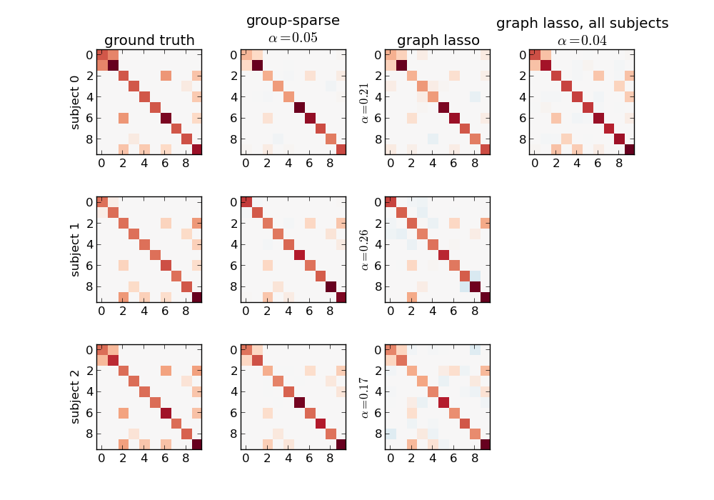

This example shows a comparison of graph lasso and group-sparse covariance estimates for a synthetic dataset.
Script output:
[GroupSparseCovarianceCV.fit] tolerance reached at iteration number 1: 0.000e+00
[GroupSparseCovarianceCV.fit] tolerance reached at iteration number 3: 7.147e-03
[GroupSparseCovarianceCV.fit] Log-likelihood on test set is decreasing. Stopping at iteration 0
[GroupSparseCovarianceCV.fit] Log-likelihood on test set is decreasing. Stopping at iteration 0
[GroupSparseCovarianceCV.fit] tolerance reached at iteration number 1: 0.000e+00
[GroupSparseCovarianceCV.fit] tolerance reached at iteration number 4: 1.997e-03
[GroupSparseCovarianceCV.fit] Log-likelihood on test set is decreasing. Stopping at iteration 0
[GroupSparseCovarianceCV.fit] Log-likelihood on test set is decreasing. Stopping at iteration 0
[GroupSparseCovarianceCV.fit] tolerance reached at iteration number 1: 0.000e+00
[GroupSparseCovarianceCV.fit] tolerance reached at iteration number 3: 7.216e-03
[GroupSparseCovarianceCV.fit] Log-likelihood on test set is decreasing. Stopping at iteration 0
[GroupSparseCovarianceCV.fit] Log-likelihood on test set is decreasing. Stopping at iteration 0
[GroupSparseCovarianceCV.fit] [GroupSparseCovarianceCV] Done refinement 1 out of 4
[GroupSparseCovarianceCV.fit] Log-likelihood on test set is decreasing. Stopping at iteration 1
[GroupSparseCovarianceCV.fit] tolerance reached at iteration number 3: 2.208e-03
[GroupSparseCovarianceCV.fit] Log-likelihood on test set is decreasing. Stopping at iteration 0
[GroupSparseCovarianceCV.fit] Log-likelihood on test set is decreasing. Stopping at iteration 0
[GroupSparseCovarianceCV.fit] Log-likelihood on test set is decreasing. Stopping at iteration 1
[GroupSparseCovarianceCV.fit] tolerance reached at iteration number 3: 6.538e-03
[GroupSparseCovarianceCV.fit] Log-likelihood on test set is decreasing. Stopping at iteration 0
[GroupSparseCovarianceCV.fit] Log-likelihood on test set is decreasing. Stopping at iteration 0
[GroupSparseCovarianceCV.fit] Log-likelihood on test set is decreasing. Stopping at iteration 1
[GroupSparseCovarianceCV.fit] Log-likelihood on test set is decreasing. Stopping at iteration 1
[GroupSparseCovarianceCV.fit] Log-likelihood on test set is decreasing. Stopping at iteration 0
[GroupSparseCovarianceCV.fit] Log-likelihood on test set is decreasing. Stopping at iteration 0
[GroupSparseCovarianceCV.fit] [GroupSparseCovarianceCV] Done refinement 2 out of 4
[GroupSparseCovarianceCV.fit] Log-likelihood on test set is decreasing. Stopping at iteration 1
[GroupSparseCovarianceCV.fit] Log-likelihood on test set is decreasing. Stopping at iteration 1
[GroupSparseCovarianceCV.fit] Log-likelihood on test set is decreasing. Stopping at iteration 1
[GroupSparseCovarianceCV.fit] Log-likelihood on test set is decreasing. Stopping at iteration 0
[GroupSparseCovarianceCV.fit] Log-likelihood on test set is decreasing. Stopping at iteration 1
[GroupSparseCovarianceCV.fit] Log-likelihood on test set is decreasing. Stopping at iteration 1
[GroupSparseCovarianceCV.fit] tolerance reached at iteration number 3: 1.486e-03
[GroupSparseCovarianceCV.fit] Log-likelihood on test set is decreasing. Stopping at iteration 0
[GroupSparseCovarianceCV.fit] Log-likelihood on test set is decreasing. Stopping at iteration 1
[GroupSparseCovarianceCV.fit] Log-likelihood on test set is decreasing. Stopping at iteration 1
[GroupSparseCovarianceCV.fit] Log-likelihood on test set is decreasing. Stopping at iteration 1
[GroupSparseCovarianceCV.fit] Log-likelihood on test set is decreasing. Stopping at iteration 0
[GroupSparseCovarianceCV.fit] [GroupSparseCovarianceCV] Done refinement 3 out of 4
[GroupSparseCovarianceCV.fit] Log-likelihood on test set is decreasing. Stopping at iteration 1
[GroupSparseCovarianceCV.fit] Log-likelihood on test set is decreasing. Stopping at iteration 1
[GroupSparseCovarianceCV.fit] Log-likelihood on test set is decreasing. Stopping at iteration 0
[GroupSparseCovarianceCV.fit] Log-likelihood on test set is decreasing. Stopping at iteration 0
[GroupSparseCovarianceCV.fit] tolerance reached at iteration number 3: 5.731e-03
[GroupSparseCovarianceCV.fit] tolerance reached at iteration number 2: 4.374e-03
[GroupSparseCovarianceCV.fit] Log-likelihood on test set is decreasing. Stopping at iteration 0
[GroupSparseCovarianceCV.fit] Log-likelihood on test set is decreasing. Stopping at iteration 0
[GroupSparseCovarianceCV.fit] Log-likelihood on test set is decreasing. Stopping at iteration 1
[GroupSparseCovarianceCV.fit] Log-likelihood on test set is decreasing. Stopping at iteration 1
[GroupSparseCovarianceCV.fit] Log-likelihood on test set is decreasing. Stopping at iteration 1
[GroupSparseCovarianceCV.fit] Log-likelihood on test set is decreasing. Stopping at iteration 1
[GroupSparseCovarianceCV.fit] [GroupSparseCovarianceCV] Done refinement 4 out of 4
[GroupSparseCovarianceCV.fit] Final optimization
[GroupSparseCovarianceCV.fit] tolerance reached at iteration number 4: 2.494e-04
[GraphLassoCV] Done refinement 1 out of 4: 0s
[GraphLassoCV] Done refinement 2 out of 4: 0s
[GraphLassoCV] Done refinement 3 out of 4: 0s
[GraphLassoCV] Done refinement 4 out of 4: 0s
[GraphLassoCV] Done refinement 1 out of 4: 0s
[GraphLassoCV] Done refinement 2 out of 4: 0s
[GraphLassoCV] Done refinement 3 out of 4: 0s
[GraphLassoCV] Done refinement 4 out of 4: 0s
[GraphLassoCV] Done refinement 1 out of 4: 0s
[GraphLassoCV] Done refinement 2 out of 4: 0s
[GraphLassoCV] Done refinement 3 out of 4: 0s
[GraphLassoCV] Done refinement 4 out of 4: 0s
[GraphLassoCV] Done refinement 1 out of 4: 0s
[GraphLassoCV] Done refinement 2 out of 4: 0s
[GraphLassoCV] Done refinement 3 out of 4: 0s
[GraphLassoCV] Done refinement 4 out of 4: 0s
Python source code: plot_connect_comparison.py
import matplotlib.pyplot as plt
def plot_matrix(m, ylabel=""):
abs_max = abs(m).max()
plt.imshow(m, cmap=plt.cm.RdBu_r, interpolation="nearest",
vmin=-abs_max, vmax=abs_max)
# Generate synthetic data
from nilearn._utils.testing import generate_group_sparse_gaussian_graphs
n_subjects = 20 # number of subjects
n_displayed = 3 # number of subjects displayed
subjects, precisions, topology = generate_group_sparse_gaussian_graphs(
n_subjects=n_subjects, n_features=10, min_n_samples=30, max_n_samples=50,
density=0.1)
fig = plt.figure(figsize=(10, 7))
plt.subplots_adjust(hspace=0.4)
for n in range(n_displayed):
plt.subplot(n_displayed, 4, 4 * n + 1)
plot_matrix(precisions[n])
if n == 0:
plt.title("ground truth")
plt.ylabel("subject %d" % n)
# Run group-sparse covariance on all subjects
from nilearn.group_sparse_covariance import GroupSparseCovarianceCV
gsc = GroupSparseCovarianceCV(max_iter=50, verbose=1)
gsc.fit(subjects)
for n in range(n_displayed):
plt.subplot(n_displayed, 4, 4 * n + 2)
plot_matrix(gsc.precisions_[..., n])
if n == 0:
plt.title("group-sparse\n$\\alpha=%.2f$" % gsc.alpha_)
# Fit one graph lasso per subject
from sklearn.covariance import GraphLassoCV
gl = GraphLassoCV(verbose=1)
for n, subject in enumerate(subjects[:n_displayed]):
gl.fit(subject)
plt.subplot(n_displayed, 4, 4 * n + 3)
plot_matrix(gl.precision_)
if n == 0:
plt.title("graph lasso")
plt.ylabel("$\\alpha=%.2f$" % gl.alpha_)
# Fit one graph lasso for all subjects at once
import numpy as np
gl.fit(np.concatenate(subjects))
plt.subplot(n_displayed, 4, 4)
plot_matrix(gl.precision_)
plt.title("graph lasso, all subjects\n$\\alpha=%.2f$" % gl.alpha_)
plt.show()
Total running time of the example: 5.10 seconds ( 0 minutes 5.10 seconds)